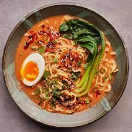

Fancy Ramen

Ramen with vegetables, mushrooms and an egg, great for a cold winters night!
Ingredients
- 4 cups of water.
- 8 ounces of sliced fresh mushrooms.
- 1 bunch of green onions, thinly sliced.
- 1 large carrot sliced.
- ½ yellow onion, sliced.
- 2 tablespoons of soy sauce.
- 2 tablespoons of minced garlic.
- 1 tablespoon sriracha sauce.
- 1 teaspoon of sesamee oil.
- 1 teaspoon of rice wine vinegar.
- ½ teaspoon of ground white pepper.
- ½ teaspoon cracked black pepper.
- 2 (3 ounce) packages of chicken-flavoured ramen noodles.
Preperation and Cooking Steps
- Combine water, mushrooms, 1/2 the green onions, carrot, onion, soy sauce, garlic, Sriracha sauce, sesame oil, rice wine vinegar, white pepper, black pepper, and flavor packets from ramen in a large pot. Bring to a boil. Add noodles and cook, occasionally stirring, until noodles are tender yet firm to the bite, about 5 minutes.
- Reduce heat to a simmer and cook until vegetables are tender, about 10 minutes. Serve topped with remaining green onions.
Return to Homepage